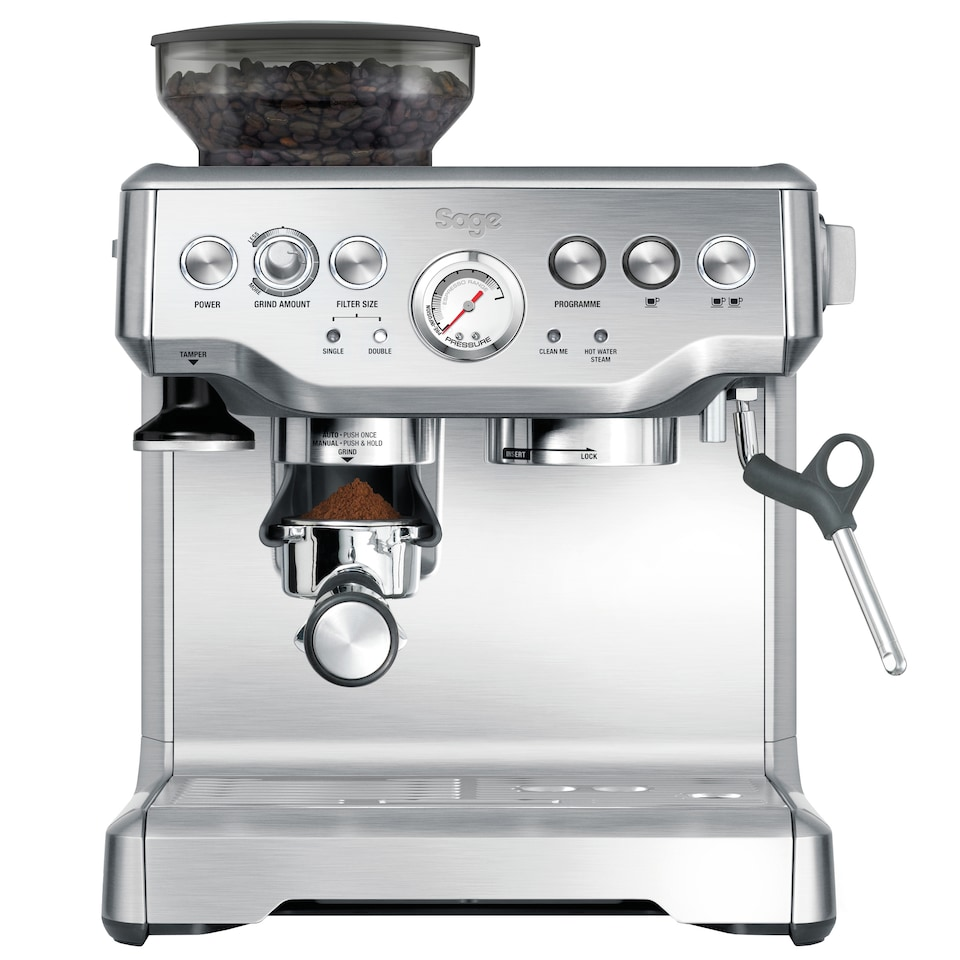
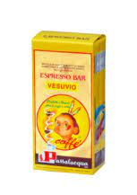

Du behöver
- 19-21 gram kaffebönor med hög andel robusta
- 6-8 cl vatten
- En bra espressomaskin
Så här gör du
- Mal Kaffebönorna fint
- Pressa det malda kaffet med 12kg tryck
- brygg 6-8 cl espresso under 20-30 sekunder
Malniningsgrad och bryggtid varierar mellan bönor samt luftfuktighet, prova dig fram!
Här är bilder och länkar på mina favorit bönor och en bra nybörjarmaskin.
 